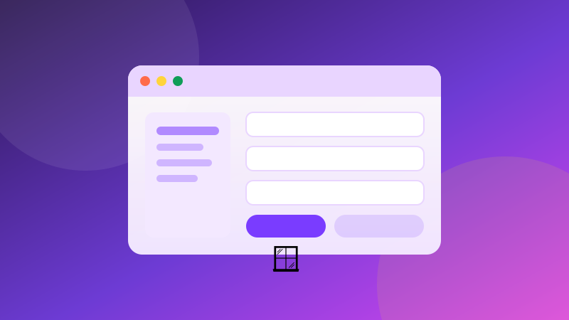

🪟 GUITakenlijst met venster
Maak een takenlijst die je met knoppen beheert.
Speel dit idee opent de speelbare app hieronder.
Gebruik dit idee toont alle code.
Je voortgang wordt lokaal in je browser bewaard.
Moet je iets typen? Vraagt dit project om invoer, dan verschijnt bovenaan je
scherm een venster met de vraag en een tekstvak. Typ daar je antwoord en druk op
Enter.
Kies ▶ Speel dit idee voor de app, of ⌨ Gebruik dit idee voor alle code.
Maak een takenlijst die je met knoppen beheert.
Dit is de app-weergave. Speel de demo of kies ⌨ Gebruik dit idee voor alle code en uitleg.
1 Waar gaat dit over?
Je leert een Listbox, Entry en knoppen combineren. Je voegt taken toe, verwijdert ze en vinkt ze af.
2 Wat leer je?
3 Stap voor stap
Bouw de basis
Een invoerveld, een lijst en drie knoppen vormen de hele app.
import tkinter as tk
venster = tk.Tk()
venster.title("Mijn taken")
invoer = tk.Entry(venster, width=40)
invoer.pack(padx=12, pady=8)
lijst = tk.Listbox(venster, width=50, height=12)
lijst.pack(padx=12, pady=8)
venster.mainloop()Voeg een taak toe
Lees de invoer, controleer op lege tekst en wis daarna het veld.
def toevoegen(event=None):
taak = invoer.get().strip()
if taak:
lijst.insert("end", taak)
invoer.delete(0, "end")
invoer.bind("<Return>", toevoegen)
tk.Button(venster, text="Toevoegen", command=toevoegen).pack()Verwijder de selectie
Met curselection weet je welk item geselecteerd is.
def verwijderen():
selectie = lijst.curselection()
if selectie:
lijst.delete(selectie[0])
tk.Button(venster, text="Verwijderen", command=verwijderen).pack()Markeer als klaar
Een prefix in de lijst is genoeg voor een eerste versie.
def klaar():
selectie = lijst.curselection()
if selectie:
index = selectie[0]
tekst = lijst.get(index)
if not tekst.startswith("✓ "):
lijst.delete(index)
lijst.insert(index, "✓ " + tekst)
tk.Button(venster, text="Klaar", command=klaar).pack()Bewaar de taken
Sla de lijst op in een tekstbestand en lees hem bij het starten.
from pathlib import Path
BESTAND = Path("taken.txt")
def laad():
if BESTAND.exists():
for regel in BESTAND.read_text(encoding="utf-8").splitlines():
lijst.insert("end", regel)
def bewaar():
taken = lijst.get(0, "end")
BESTAND.write_text("\n".join(taken), encoding="utf-8")
venster.protocol("WM_DELETE_WINDOW", lambda: (bewaar(), venster.destroy()))4 Tips
- Test met een lege invoer en een lege lijst.
- Gebruik een checkbox of prefix voor afgeronde taken.